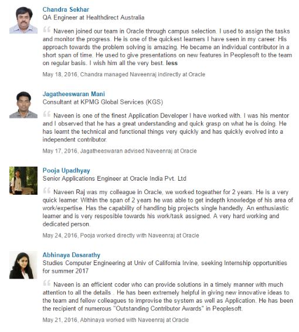

Full Time Grad Student at UTD | Research Assistant and Software Developer at Institute of Data Analytics
Hye, I'm Naveenraj
I'm currently pursuing Master of Science in Computer Science in University of Texas at Dallas ( December 2017 ) Currently I am working as Software Developer/ Research Assistant at Dallas Data Analytics and Performance Management Laboratory UT Dallas. I was working in Oracle as Application Engineer for 2.5 years.
In my Masters, I'm into the Data Science and Intelligent Systems track. I am a quick learner with effective problem solving abilities. I have been widely appreciated for my logical and analytical skills in my professional experience.
Key Interests: Big Data Management,Full Stack Development and Software Design and Development
From : June 2013 To: December 2015
As an Applications Engineer, Worked on Peoplesoft FSCM product development both technical and functional areas.
Awards:
Recommendations :

From : May 2016 To: Present
Part of the critical development team that builds and implements features of TL9000 quality management system - a J2EE web application.
Awards:
From : March 2016 To: April 2016
Goal of this project will be to recommend songs to the user based on the current playing songs.UN supervised learning to associate songs to different clusters and each cluster will be classified accordingly using neural networks. If new song is added to the system it will classify based on the genre and tell us probability of song belonging to particular cluster to any other cluster, this is naïve based. For example if a user is listening to hip hop song then song with most hip hop probability will be suggested to the user, this will keep user mind state in constant phase.
From : Feb 2016 To: April 2016
EventIt!, a one stop event repository that helps people to know about the various events happening in and around their neighborhood. It also serves as a platform for the event hosts to promote their ticket free events.
Application to make kids enjoy the 'Joy of Learning'. Animated images with pleasent background music will make kids enjoy this Application.
A timer is a specialized type of clock for measuring time intervals. A timer which counts upwards from zero for measuring elapsed time.Application to set user friendly timer to remaind.
User Friendly Application to play Tic Tac Toe with friends or with the Meachine Learned Computer. Best short time pass in leisure hours. Tic-tac-toe (also known as noughts and crosses or Xs and Os) is a paper-and-pencil game for two players, X and O, who take turns marking the spaces in a 3×3 grid. The player who succeeds in placing three of their marks in a horizontal, vertical, or diagonal row wins the game.
An anagram is a word formed by rearranging the letters of another word. For example, cinema is an anagram of iceman. The mechanics of the game are as follows: The game provides the user with a word from the dictionary. The user tries to create as many words as possible that contain all the letters of the given word plus one additional letter. Note that adding the extra letter at the beginning or the end without reordering the other letters is not valid. For example, if the game picks the word 'ore' as a starter, the user might guess 'rose' or 'zero' but not 'sore'. The user can give up and see the words that they did not guess.
Ghost is a word game in which players take turns adding individual letters to a growing word fragment, trying not to be the one to complete a valid word. Each fragment must be the beginning of an actual word, and, for our purposes, we will consider 4 to be the minimum word length. The player who completes a word or creates a fragment that is not the prefix of a word loses the round.
From : July 2016 To: Aug 2016
Market place to sale or buy used goods.Seller can post one to many items for sale and keep monitor and update their status. Buyer can search for the goods near their location and request to buy product by contacting seller.
From : Jan 2013 To: April 2013
Satellite images usually cover large area that will have various classes (grass, land, building etc.). So, these large areas which contain various classes will be seen as a single pixel in the satellite image. The project focuses on obtaining the exact location of the different classes present in the single pixel. Soft classification of the input image is performed to identify the spectral components (the percentage of classes present in a single pixel) of the image. PSO (Particle Swarm Optimization) is applied for each soft classified class image after calculating the attraction between neighboring pixels and correlation between the sub-pixels. Results of all the classes after PSO (Particle Swarm Optimization) are merged to obtain the final classified map. ACO (Ant Colony Optimization) is applied for all the soft classified images and results of all the class images are merged to obtain the final classified map. Classified maps of the ACO (Ant Colony Optimization) and PSO (Particle Swarm Optimization) are compared.
From : May 2012 To: December 2012
An innovative project funded by CPDE (Center for Professional Development Education) Anna University. India is rapidly moving towards evolution of mechanism. Yet ration shops is more vulnerable to misbehaviour. So to increase the stability and security in the ration shops this project is developed with the help of a Biometric system in an automated environment.It will ease our purchasing in the ration shops.By the help of this ‘Automated Ration Shop system’ software we can do all works efficiently and with less time.
Awards: Much Appricated Project in Techfluence Anna University
469-996-1744